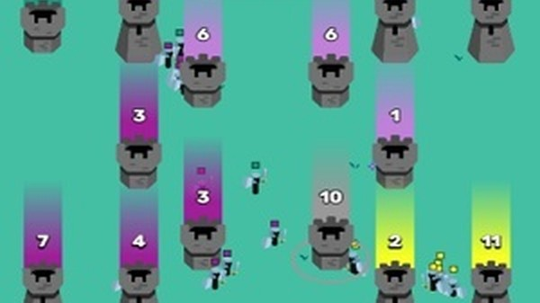
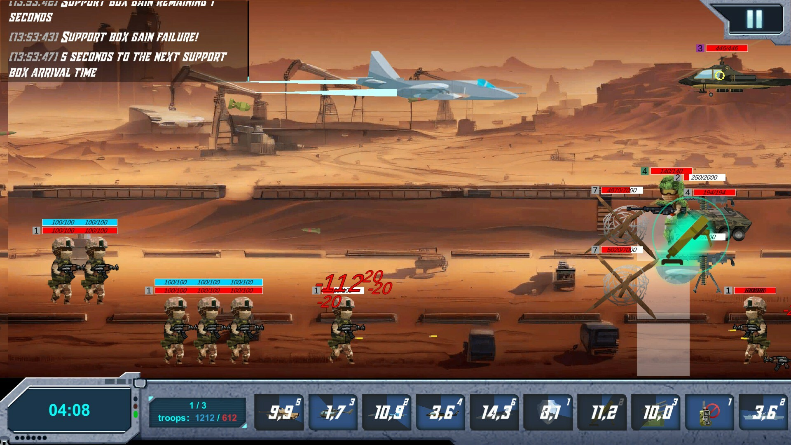
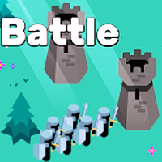

Introduction
Battlefields.io is a fast-paced, multiplayer browser strategy game where you step into the boots of a battle-hardened lord. Set on a vast, contested plain, your ultimate goal is to conquer every fortress scattered across the map. What makes Battlefields.io truly unique is its minimalist yet deeply tactical gameplay loop, blending rapid troop generation with real-time territorial control. Players love it because it perfectly balances quick, intuitive decision-making with long-term strategic planning. Whether you are upgrading your strongholds to spawn more soldiers or launching massive combined-arms assaults to overwhelm rival lords, every match offers a fresh, addictive challenge. It is the ultimate test of tactical supremacy, requiring no downloads and delivering instant, thrilling multiplayer action directly in your web browser.
Getting Started

Starting your conquest in Battlefields.io is incredibly straightforward. Upon loading the game, you spawn on a colorful, minimalist battlefield containing your home fortress and several neutral or enemy strongholds. Your core mechanic revolves around troop generation; your strongholds automatically produce soldiers over time. To deploy your forces, simply click and drag from your fortress toward a target location. The size of your drag determines the percentage of troops you send. Your first steps should focus on securing neutral fortresses to increase your overall income rate. Once you have a steady stream of soldiers, you can begin attacking enemy lords. Controls are highly intuitive: use left-click to select and drag troops, and look for upgrade icons on your captured buildings to spend your accumulated resources. Upgrading buildings is crucial, as it either increases troop generation speed or fortifies your defenses. Mastering the balance between expanding your territory by capturing new fortresses and investing in your existing strongholds forms the foundation of your early-game strategy.
Basic Tips
1. Secure Neutrals First: Before engaging enemy lords, use your initial troops to capture all neutral fortresses on the map. This exponentially increases your soldier generation rate, giving you a massive numerical advantage. 2. Upgrade Generation Over Defense: Early on, prioritize upgrading the troop generation speed of your front-line fortresses rather than their defensive stats. A larger, constantly flowing army is your best defense against early rushes. 3. Watch the Numbers: Always check the troop count hovering over each fortress. Never send a force smaller than the defending army unless you are using a specific flanking distraction tactic. Overwhelm targets by sending at least 120% of their garrison size. 4. Defend Your Rear: Do not commit 100% of your troops to a single attack. Always leave a small garrison in your home fortress to prevent enemy lords from sneaking in and capturing your spawn point while you are distracted.
Advanced Strategies

1. The Pincer Movement: When attacking a heavily fortified enemy stronghold, do not send all troops from one adjacent fortress. Instead, coordinate simultaneous attacks from two or three different captured forts. This splits the defender response and guarantees a successful breach. 2. Bait and Switch: Send a small, seemingly foolish wave of troops toward a rival fortress to bait out their counter-attack. Once they commit their main army to crush your bait, immediately launch your primary force from an upgraded, distant stronghold to capture their now-undefended rear territories. 3. Chokepoint Control: Identify map bottlenecks where fortresses are clustered. By capturing and heavily upgrading the single fortress at the entrance of a chokepoint, you can create an impenetrable wall that halts enemy advances while you safely expand on the other side of the map.
Pro Tips

1. Micro-Management Dragging: Instead of dragging the whole army, drag just a tiny sliver of troops to create a feint line. AI and human opponents will often react to the movement, allowing you to strike their exposed flank with your main force. 2. Timing the Upgrades: Do not upgrade a fortress the second you capture it. Wait until an enemy is actively attacking it. The upgrade effect can sometimes interrupt their assault timing, or you can use the resource spike to instantly spawn a massive counter-wave. 3. Map Awareness: Constantly monitor the minimap for color shifts. If a neutral fort turns enemy color, immediately cut off their supply lines by capturing the connecting forts, starving their forward army of reinforcements.
🎮 Controls & Mechanics Deep Dive
To truly dominate in Battlefields.io, you need to understand the game under the hood. While the minimalist art style makes it look simple, the underlying mechanics are surprisingly deep. If you're playing on a PC, the control scheme is entirely mouse-driven, designed to keep your actions per minute (APM) as high as possible. Left-click and drag to draw a selection box around your troops. Right-click on the map to move them, or right-click an enemy fortress to initiate an attack. Holding Shift while right-clicking allows you to set waypoints, which is an absolute lifesaver for routing troops around enemy chokepoints.
The most crucial mechanic to grasp is the troop flow and collision physics. Unlike some strategy games where units instantly teleport to their destination, troops in Battlefields.io physically march across the terrain. This means travel time, terrain speed modifiers, and collision matter immensely. If you send a massive army through a narrow mountain pass, they will bottleneck. The troops in the back can't engage the enemy until the front line is cleared or pushed back. You need to actively manage your pathing to avoid these traffic jams.
Another hidden layer is the garrison and generation math. Every fortress has a hard cap on how many troops it can hold, and a specific generation rate. When you siege a fortress, your troops don't just kill the defenders one-to-one; they apply continuous pressure. If your attacking force is larger than the defending garrison, the capture progress bar starts filling. However, if the defending fortress has a high generation rate, it might actually out-heal your damage over time. Understanding the exact numerical threshold required to break a specific fortress is the difference between a wasted attack and a successful conquest.
🎯 Game Modes Breakdown
Battlefields.io offers a variety of modes to test different playstyles, from chaotic free-for-alls to highly coordinated team battles. Knowing the rules and objectives of each mode is critical for adapting your strategy on the fly.
- Classic Free-For-All (FFA): This is the bread and butter of the game. Up to 8 players drop onto a massive map, and it’s every lord for themselves. The objective is simple: conquer all fortresses or be the last player with troops on the map. FFA rewards aggressive early expansion and opportunistic backstabbing. Keep an eye on the minimap, because while you're fighting one player, a third will likely swoop in to steal your unguarded territories.
- Team Conquest: Jumping into 2v2 or 4v4 Team Conquest completely changes the pace. You share vision with your teammates, meaning you can see what they see. The objective is to reduce the enemy team's total fortress count to zero. Communication is key here. You'll want to coordinate synchronized pushes from multiple angles rather than sending disjointed, single-front attacks. If your teammate is defending, you should be on the offense.
- Battle Royale (Shrinking Map): In this intense mode, the map is surrounded by an impassable "Fog of War" that slowly shrinks over time. It forces players out of their defensive turtling positions and into the center of the map. The player count is usually higher (up to 12 players), making the early game a frantic scramble for central fortresses. Late-game positioning is everything; you want to be on the edge of the safe zone to control the chokepoints as the circle closes.
- Ranked Blitz: Designed for competitive players, Blitz matches are played on smaller, highly symmetrical maps with a strict time limit. If no one conquers all forts, the player with the highest total troop count and fortress value wins. This mode heavily punishes slow, methodical play and rewards rapid, calculated aggression.
🚀 Advanced Strategies & Pro Tips
Once you've mastered the basics, it's time to elevate your gameplay with some pro-level tactics. These strategies focus on macro-management, psychological warfare, and micro-level troop control that will leave casual players scratching their heads.
The "Feint and Flank" Maneuver: Never just send your whole army straight at an enemy fortress. Instead, send a small, highly visible "feint" force directly at the front gate. The enemy (or the AI) will naturally pull troops from the sides to reinforce the center. The moment their flanks are weakened, send your main army sweeping around the sides. This is incredibly effective in 1v1 situations where you can manually out-micro your opponent.
Mastering Troop Math and Sieges: Stop guessing if you have enough troops to take a fort. Learn to calculate the "troop differential." If an enemy fortress has 40 troops and generates 2 per second, and you attack with 50 troops, you have a 10-troop advantage. But if the siege takes 10 seconds, the fort will generate 20 more troops, wiping out your advantage. Always calculate the generation rate into your attack plans. A good rule of thumb is to bring at least 1.5 times the defending garrison size for a quick, clean capture.
The "Empty Fort" Bluff: This is a brilliant psychological play. When you need to launch a massive all-out attack, leave one of your rear fortresses with exactly one single troop inside. To a rushing enemy scanning the map quickly, a fortress with 1 troop looks like a trap or a heavily defended stronghold they don't have time to check. It buys your main army the crucial seconds they need to break the enemy line.
Micro-Splitting for Pathing: If you have a massive army of 200 troops and need to get through a narrow gap, don't just click and march. Select half your army, send them slightly to the left, then select the other half and send them slightly to the right. This manual splitting prevents the dreaded "blob" bottleneck and allows your troops to flow through tight spaces much faster, hitting the enemy before they can react.
❓ Frequently Asked Questions
Is Battlefields.io completely free to play?
Yes, absolutely! Battlefields.io is a browser-based .io game, meaning it is 100% free to play with no pay-to-win mechanics. There are optional cosmetic purchases for custom lord skins and troop colors, but these have zero impact on gameplay or stats.
Can I play the game on my phone or tablet?
You can! The game features a responsive web design and touch-optimized controls for mobile browsers. However, because the game requires high APM and precise troop selection, playing on a PC with a mouse is highly recommended if you want to compete in Ranked modes.
How do I create a private room to play with my friends?
From the main menu, click on the "Custom Lobby" button. You can set the map size, player limits, and game rules. Once the room is created, simply copy the room link or the 4-digit room code and share it with your friends. They can paste the code into the "Join Room" box on their main menu.
What are the minimum system requirements to run the game smoothly?
Because it's an HTML5 browser game, the requirements are incredibly low. Any modern device with an updated web browser (Chrome, Firefox, Edge, or Safari) and WebGL support will run it perfectly. You don't need a dedicated graphics card; the minimalist art style is designed to run at a buttery smooth 60 FPS even on older laptops.
How can I improve my map awareness and macro play?
The best way to improve is to force yourself to look at the minimap every 5 to 10 seconds. Get into the habit of glancing at it while your troops are marching. Additionally, watch replays of top-ranked players. Pay attention to how they manage their economy in the first 60 seconds and how they transition from early expansion to late-game map control.
Conclusion
Battlefields.io offers a brilliant mix of rapid reflexes and deep strategic planning. By mastering troop deployment, fortress upgrades, and tactical feints, you can dominate the contested plains and crush rival lords. Jump into the browser, refine your tactics, and prove your worth as the ultimate battle-hardened commander today!